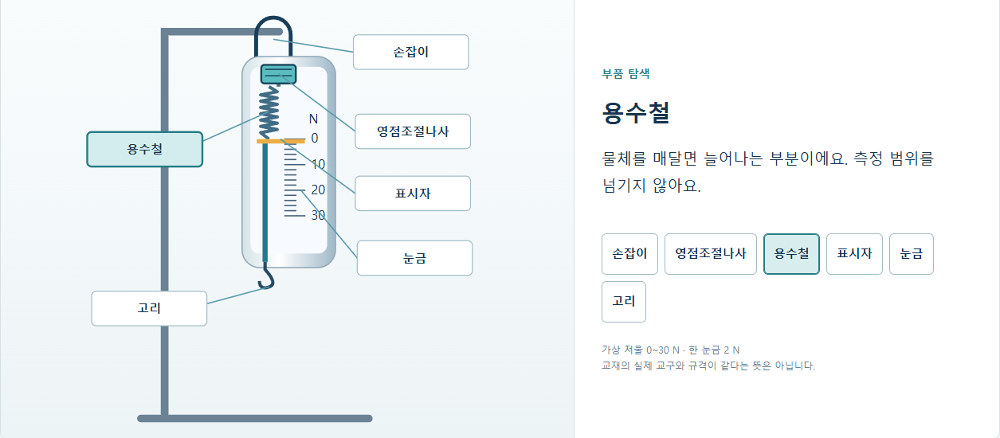
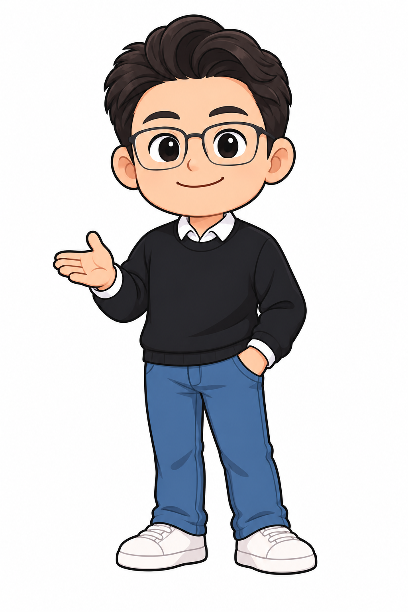

학생 자습용
내 속도로 해 보고,
답을 쓴 뒤 확인해요.
실험을 반복하고, 교재의 서답형에는 직접 답을 씁니다. 제출한 뒤 문항별 풀이를 보고 관련 실험으로 돌아갈 수 있습니다.
학생 자습 체험초과심_물리 무게 재기
영점을 맞추고, 눈높이를 바꾸고,
왜 그런지 내 말로 설명해 보는 과학.
CHAPTER 01 시범 수업 현재 로컬 미리보기

본문의 개념과 문항은 충실하게.
탐구하는 방법은 더 생생하게.
설명 다음에 정답을 바로 보여 주지 않습니다.
먼저 예상하고, 조작한 결과를 관찰한 뒤,
자신의 생각을 설명하도록 수업을 이어 갑니다.
같은 물체를 들어도 느낌은 같을까요?
친구와 예상과 이유를 나눕니다.
관찰한 내용을 내 말로 설명합니다.
교재의 일일평가 6문항으로 다시 확인합니다.
같은 내용을 배우되,
배우는 상황에 맞게 화면을 나눴습니다.

학생 자습용
실험을 반복하고, 교재의 서답형에는 직접 답을 씁니다. 제출한 뒤 문항별 풀이를 보고 관련 실험으로 돌아갈 수 있습니다.
학생 자습 체험전자칠판 강의용
터치로 실험을 조작하고 화면에 판서합니다. 풀이 공개, 판서 취소, 장면 초기화를 교사가 조절합니다.
전자칠판 수업 체험지금 가능한 것과
준비 중인 것을 분명하게 안내합니다.
초과심_물리 PART I 무게 재기 중 CHAPTER 01 ‘용수철저울의 구조 익히기’ 시범 수업입니다. 본문 10~15쪽을 바탕으로 예상, 구조, 영점, 측정, 눈높이, 저울 종류, 과학 이야기, 일일평가로 구성했습니다. 나머지 챕터와 전체 과목이 완성된 상태는 아닙니다.
CHAPTER 01의 개념·사용 순서·문항을 기준으로 구성했습니다. 15쪽 daily test 6문항은 원본 문항이며 서답형은 직접 답을 쓰도록 유지했습니다. 44~47쪽 단원평가 20문항은 별도 평가로 남겨 두었으며 이번 시범 수업에는 포함하지 않았습니다.
원리를 살펴보는 2D 가상 모형입니다. 실제 촬영 영상이나 3D 실험이 아니며 실제 교구 활동을 대체한다는 뜻도 아닙니다. 0~30 N 범위와 한 눈금 2 N은 이 모형의 설정입니다. 실제 실험 전후에 예상과 관찰 내용을 비교하는 용도로 사용할 수 있습니다.
브라우저에서 학생용과 강의용 화면을 열 수 있습니다. PC·모바일 화면과 터치 시뮬레이션을 확인했으며, 강의용에는 전체 화면과 펜 판서를 마련했습니다. 실제 사용하실 전자칠판에서는 터치·펜·화면 배율을 별도로 확인해야 합니다.
이번 시범 수업에는 캐릭터 음성과 실제 촬영 영상을 아직 연결하지 않았습니다. 실험 움직임은 무음입니다. 이 소개 페이지와 수업은 현재 같은 컴퓨터의 로컬 미리보기이며, 외부 공개 주소는 아직 없습니다.
자습의 첫 제출 답안과 결과는 사용 중인 기기의 브라우저에만 저장하며 외부로 전송하지 않습니다. 기기 사이에 동기화되지 않고 브라우저 데이터를 지우면 사라집니다. 공용 기기에서는 다른 학생이 사용하기 전에 브라우저 이용 환경을 분리해 주세요.
초과심_물리 · 무게 재기 · CHAPTER 01
용수철저울의 구조 익히기 시범 수업